بسم الله الرحمن الرحيم
Sayyid Abul Ala Maududi - Tafhim al-Qur'an - The Meaning of the Qur'an
 58.
Surah Al Mujadilah (The Pleading Woman)
58.
Surah Al Mujadilah (The Pleading Woman)
This Surah is entitled Al Mujadalah as well as Al Mujadilah, the title being derived from the word tujadiluka of the very first verse. As at the outset mention has been made of the woman who pleaded with the Holy Prophet (upon whom be Allah's peace) the case of zihar pronounced by her husband and urged him to suggest a way out of the difficult situation in order to save her and, her children's life from ruin, and Allah has described her pleading by the word "mujadalah", the Surah came to be known by this very title. If it is read as "mujadalah",it would mean "pleading and arguing", and if it is read as "mujadilah", it would mean "the woman who pleaded and argued."
There is no tradition to tell as to when this incident of pleading and arguing took place, but there is a hint in the subject matter of the Surah on the basis of which it can be said with certainty that it happened some time after the battle of the Trench (Shawwal, 5 A. H.). In Surah Al-Ahzab, Allah while negating that an adopted son could be one's real son, had just said this and no more; "And Allah has not made those of your wives whom you divorce by zihar your mothers." But in that Surah there was nothing to the effect that to divorce a wife by zihar was a sin or a crime, nor anything about the legal injunction concerning it. Contrary to it, in this Surah the whole law relating to zihar has been laid down, which shows that these detailed injunctions were sent down some time after the brief reference to it in Surah Al- Ahzab.
In this Surah instructions have been given to the Muslims about the different problems that confronted them at that time.
From the beginning of the Surah to verse 6 legal injunctions about zihar have been given, along with which the Muslims have been strictly warned that it is contrary to their profession of the Faith that they should still persist in the practices of ignorance after they have accepted Islam, that they should break the bounds set by Allah, or refuse to abide by them, or that they should make their own rules and regulations contradictory to them. For this there is not only the punishment of disgrace and humiliation in the world but in the Hereafter too there will be strict accountability for it.
In vv. 7-10 the hypocrites have been taken to task for their secret whisperings and consultations by which they conspired and intrigued against the "Holy Prophet (upon whom be Allah's peace and blessings), and because of their hidden malice and grudge greeted him, like the Jews, in a manner as to wish him ill instead of well. In this connection, the Muslims have been consoled, as if to say: "These whisperings of the hypocrites can do no harm to you; therefore, you should go on doing your duty with full trust in Allah". Besides, they have also been taught this moral lesson:"The true believers, when they talk secretly together, do not talk of sin and transgression and disobedience to the Messenger if they have to talk secretly together they should talk of goodness and piety."
In vv. 11-13 the Muslims have been taught certain manners of social behavior and given instructions to eradicate certain social evils which were prevalent among the people then as they are today. If some people are sitting in an assembly, and more people arrive, they do not show even the courtesy as to squeeze in so as to make room for others, with the result that the new-comers have to keep standing, or to sit in the door-way, or to go back, or seeing that there is enough room yet start jumping over the people's heads to find room for themselves. This often used to be experienced in the Holy Prophet's assemblies. Therefore, Allah gave the instruction, as if to say:"Do not behave selfishly and narrow mindedly in your assemblies but do accommodate the new-comers also with an open heart."
Likewise, another vice found among the people is that when they go on a visit to somebody (an important person, in particular), they prolong their sitting and do not at all mind that encroaching upon his time unduly would cause him hardship. Then, if he tells them to leave, they mind it; if he himself rises up from their assembly, they complain of his lack of manners; if he tells them indirectly that he has some other business also to attend to, for which he needs time, they turn a deaf ear to his request. The Holy Prophet (upon whom be Allah's peace) himself also had to experience such misconduct of the people, who in their earnestness to benefit by his teaching did not at all see that they were wasting his precious time so badly needed for other important works. At last, Allah in order to eradicate this bad manner, enjoined that when the people are asked to rise up from an assembly, they should rise up and disperse.
Another vice prevalent among the people was that each person wished to have secret counsel individually with the Holy Prophet (upon whom be Allah's peace) without any real need, or would like that he should approach him during an assembly and whisper something to him. This was not only embarrassing for the Holy Prophet but also annoying for the people who sat in the assembly. That is why Allah imposed the restriction that anyone who wanted to consult him in private, should first give away something in charity. The object was that the people should be warned of this bad manner and made to give it up. Thus, the restriction was kept in force for a short while, and when the people had corrected their behavior, it was withdrawn.
From verse 14 to the end of the Surah members of the Muslim society, which was a mixture of the sincere Muslims and the hypocrites and the waverers, have been told plainly as to what is the criterion of sincerity in Islam. One kind of Muslims are those who are friends with the enemies of Islam: they do not hesitate for the sake of their interests to be treacherous to the religion which they profess to believe in; they spread all sorts of doubts and suspicions against Islam and prevent the people from adopting the Way of Allah. But since they are part of the Muslim community their false profession of Faith serves them as a cover and shield. The second kind of Muslims are those who, in the matter of Allah's Religion, do not care even for their own father, brother, children, and family, to say nothing of others. They do not cherish any feeling of love for the person who is an enemy of God and His Messenger and His Religion. Allah in these verses has explicitly stated that the people of the first kind, in fact, belong to Satan's party however hard they may try to convince others of their Islam by swearing oaths. And the honor of belonging to Allah's party is possessed only by the Muslims of the second kind. They alone are the true Muslims: they alone will attain to true success, and with them alone is Allah well pleased.

In the name of Allah, the Compassionate, the Merciful.
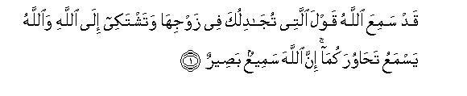
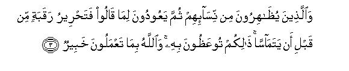
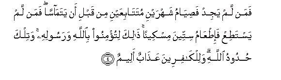
[1-4] Allah1 has indeed heard the words of the woman who is pleading with you concerning her husband and is making her complaint to Allah. Allah is hearing your mutual conversation.2 He is All-Hearing, All-Seeing. Those of you who put away their wives by zihar3 (should know that ) their wives are not their mothers. Their mothers are only those who gave them birth.4 They utter a monstrous thing and a lie.5 And Allah is All-Pardoning, All Forgiving.6 Those7 who pronounce zihar with regard to their wives, then wish to go back on what they had said,8 shall have to free a slave before the two touch each other. This you are advised to do,9 and Allah is well aware of whatever you do.10 And the one who does not find a slave, should fast two successive months before the two touch each other. And the one who is ' unable to do even this, should feed sixty needy ones.11
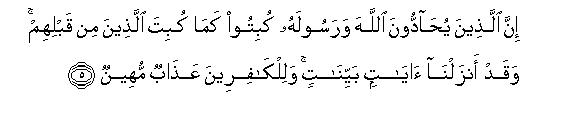
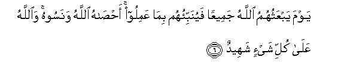
[5-6] This is being enjoined so that you may believe in Allah and His Messenger.12 These are the bounds set by Allah and for the disbelievers there is a painful punishment.13 Those who oppose Allah and His Messenger14 shall be abased as were those before them.15 We have sent down clear Revelations, and for the disbelievers there is a disgraceful torment.16 (This torment shall be meted out) on the Day when Allah will raise up all of them again, and will tell them what they had done. They have forgotten it but Allah has kept a' full record of all their deeds,17 and Allah is witness over everything.
[7-8] Are you not aware18 that Allah has the knowledge of everything in the heavens and the earth? It cannot be that three men whisper together and Allah is not the fourth of them or five men whisper together and Allah is not the sixth of than.19 Whether they are fewer than this or more, Allah is with them wherever they are.20 Then, on the Day of Resurrection, He will tell them what they have done. Allah has the knowledge of everything. Have you not seen those who were forbidden to hold secret consultations, yet they persist in what they were forbidden?21 They converse secretly together of sin and transgression and disobedience to the Messenger. And when they come to you, they greet you in a way in which Allah has not greeted you,22 and say to themselves, "Why does Allah not punish us for what we say?"23 Hell is enough for them they will become its fuel. What an evil end!
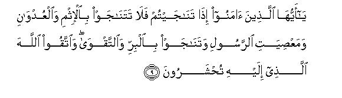
[9-10] O you who have believed, when you talk secretly together, then do not talk of sin and transgression and disobedience to the Messenger but talk of virtue and piety, and fear that God, before Whom you shall all be mustered together.24 Conspiring secretly is the work of Satan. This is done in order to cause grief to the believers, whereas it cannot harm than at all unless it be by Allah's leave. And let the believers put their trust in Allah alone.25
[11] O you who have believed, when you are told to make room in your assemblies, you should make room: Allah will make room for you.26 And when you are told to rise up, you should rise up.27 Those of you who have believed and have been granted knowledge, Allah will exalt them in ranks28 and Allah is well aware of whatever you do.
[12] O you who have believed, when you consult the Messenger in private, you should give something in charity before your consultation.29 This is better for you and purer, However, if you do not have the means to give charity, Allah is indeed All-Forgiving, All-Merciful.
[13] Are you afraid that before your consultation in private, you will have to give charity? Well, if you do not do so, and Allah has forgiven you this-then establish the Salat and practice the Zakat regularly and obey Allah and His Messenger. Allah is aware of whatever you do.30
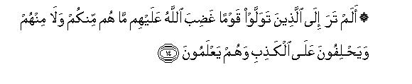
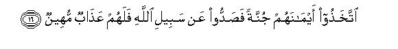
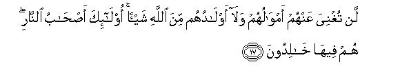
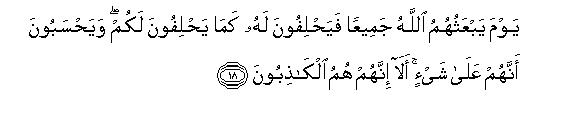
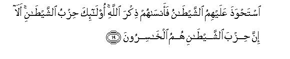
[14-21] Have you not seen those who have taken as friends a people who are under Allah's wrath?31 They are neither yours nor theirs,32 and they swear to a falsehood knowingly.33 Allah has prepared a severe torment for them. Evil are the deeds they are doing! They have made their oaths a covering under which they debar others from the Way of Allah.34 For this they shall have a disgraceful torment. Neither shall their riches avail them anything to protect them from Allah nor their children. They are the fellows of Hell in which they shall live for ever. The Day Allah raises them up all, they shall swear to Him as they swear to you,35 thinking that their oaths will avail them something. Know it well that they are utter liars. Satan has overpowered them and has caused them to forget God's remembrance. They are of Satan's party. Know it well that those of Satan's party indeed are the real losers. Surely the most abject of the creatures are those who resist Allah and His Messenger. Allah has written down: "I and My Messengers shall most certainly prevail."36 Allah is All-Powerful and All-Mighty.
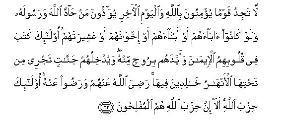
[22] You will never find any people who believe in Allah and the Last Day loving those who have opposed Allah and His Messenger, even though they be their fathers, or their sons, or their brothers, or their kinsfolk.37 They are those in whose hearts Allah has inscribed faith and has strengthened them with a spirit from Himself. He will admit them to such Gardens underneath which rivers will be flowing, to dwell there in for ever. Allah is well pleased with them and they with Allah. They are of Allah's party. Know it well that those of Allah's party alone are truly successful!
1Here, hearing does not merely imply hearing a complaint but also redressing the grievances
2The translators generally have translated these sentences in the past tense, which tends to give the meaning that the woman had left after relating her complaint and the Holy Prophet (upon whom be Allah's peace) some time later might have received this Revelation. That is why Allah has said: We indeed heard what the woman said, who was pleading with you and complaining to Us, and We were at that time hearing the conversation of both of you." But in most of the traditions that have been reported in the Hadith about this incident, it has been stated that right at the rime when the woman was relating the zihar pronounced by her husband and complaining to the Holy Prophet to the effect that if she was separated from her husband, she and her children would be ruined, the state of receiving Revelation appeared on the Holy Prophet (upon whom be Allah's peace) and these verse's were sent down. On this basis we have preferred rendering these sentences in the present tense.
The lady concerning whom these verses were sent down was Khaulah bint-Tha`labah of the Khazraj tribe, and her husband, Aus bin Samit Ansari, was brother of Hadrat `Ubadah bin Samit, the chief of the Aus tribe. The story of the zihar upon her is related in detail below. What is worth mentioning here is that the incident of the lady's complaint being heard by Allah Almighty and the coming down of the Divine command immediately to redress her grievance was an event that earned her a place of honor and esteem among the Companions. Ibn Abi Hatim and Baihaqi have related that once Hadrat `Umar was on his way out with some companions. On the way he came across a woman, who stopped him; he immediately stopped and listened to what she had to say patiently with his head bent down, and did not move till she had finished. One of the companions said: 'O Commander of the Faithful, you held back the Quraish chiefs for so long for the sake of this old woman!" Hadrat `Umar said: "Do you know who she is?She is Khaulah bint-Tha'labah, the lady whose complaint was heard at the seventh heaven. By God! even if she had kept me standing till the night, I would have kept standing; I would only have excused myself at the Prayer times." Ibn `Abdul Barr has related in Al-Isti ab this tradition from Qatadah: "When Hadrat `Umar came across this lady, on the way, he greeted her. After answering his greeting, she said, "Hey, O `Umar, there was a time when I saw you at the `Ukaz, festival. Then you were called `Umair. You tended goats with the shepherd's staff in your hand. Then, not very long after this, you began to be called `Umar. Then a time came when the people began addressing you as Commander of the Faithful. So, fear Allah with regard to your subjects, and remember that the one who fears Allah's punishment, for him the stranger also is like a close kinsman, and the one who fears death, may well lose that very thing which he wants to save.' At this, jarud 'Abdi, who was accompanying Hadrat `Umar, said: O woman, you have talked insolently to the Commander of the Faithful. " Thereupon Hadrat `Umar said: Let her say whatever she has to say. Do you know who she is?-She was heard at the seventh heaven. So, she deserves to be heard longer and with greater attention by 'Umar." Imam Bukhari also has related briefly a story resembling this in his History.
3Among the Arabs it often so happened that during a family quarrel, the husband in the heat of the moment would say to his wife: Ant-i alayya ka-zahr-i ammi which literally means: "You are for me as the back of my mother." But its real meaning is: "To have sexual relations with you would be like having sexual relations with my mother. " Such words are still uttered by the foolish people, who, as the result of a family quarrel, declare the wife to be like their mother, or sister, or daughter, and make her unlawful for themselves like the prohibited women. This is called zihar. Zahr in Arabic is metaphorically used for riding and mounting. Thus, the conveyance is called zahr, because man rides on its back. As this word was employed in order to make the wife unlawful the formula was termed 'zihar". In the pre-Islamic days this was looked upon as tantamount to the pronouncement of divorce, even of greater effect than that, for they took it to mean that the husband was not only severing his marital relations with his wife but was also declaring her to be unlawful for himself like his mother. On this very basis, the Arabs thought reunion could be possible after a divorce but it was impossible after zihar.
4This is Allah's first decision concerning zihar It means that if a person shamelessly compares the wife to his mother, his this utterance does not make his wife his mother, nor is she endowed with the sanctity that the mother enjoys. The mother's being mother is an actual fact, for she has given birth to the man. On this very ground, she is eternally sacred and prohibited. Now, how will the woman who has not given him birth become his mother simply by a word of mouth, and how will sanctity and prohibition be established for her by reason, morality and law which, by virtue of this actual fact, is only reserved for the mother who gave birth? Thus, Allah by this condemnation abolished the custom of the pre-Islamic ignorance according to which the marriage contract between the husband pronouncing zihar and the wife stood dissolved and she became absolutely forbidden for him like the mother
5That is, "'To liken the wife to the mother is, in the first place, an absurd and shameful thing which no noble person should ever think of, not to speak of uttering it with the tongue. Secondly, it is also a falsehood, for if the one who says such a thing is giving the news that his wife has now become his mother for him, he is uttering falsehood, and if he is declaring that he has henceforth bestowed on his wife the sanctity of the mother, even then his claim is false, for God has not given him the authority that he may treat a woman as his wife as long as he likes and then start treating her as his mother as and when he likes. The lawgiver is Allah Almighty, not he, and Allah has included in the order of motherhood the grandmothers, both paternal and maternal, mother-in-law, foster mother and the wives of the Holy Prophet (upon whom be Allah's peace) along with the woman who gave birth. Nobody has the right to include of his own whim another woman in this order, not to speak of the woman who has been his wife. This gives the second legal injunction. To pronounce zihar is a grave sin and forbidden act, the violation of which deserves to be punished.
6That is, Such an utterance actually deserves to be punished much more severely, but it is Allah's kindness that He has, firstly, abolished the custom of ignorance and saved your family life from utter ruin, and secondly, has prescribed the lightest punishment for the culprits. And His supreme kindness is that the punishment too, is not any form of physical torture or imprisonment, but a few acts of worship and virtue, which arc meant to reform you and help spread good in your society. In this connection, one should also understand that the acts of worship that have been prescribed by Islam as expiations for certain crimes and sins are neither mere punishments that they may be without the spirit of worship, nor mere acts of worship that they m. y entail no pain and suffering of the punishment. Hut both the aspects have been combined in them so that the culprit may experience pain as well as expiate his sin by means of performing a virtue and act of worship.
7From here begins the statement of the legal injunctions concerning zihar. To understand this, it is necessary that one should keep in mind the incidents of zihar that took place in the time of the Holy Prophet (upon whom be Allah's peace), for the code of law pertaining to zihar is derived from the verses and the judgments that the Holy Prophet gave after the revelation of these verses in the cases of zihar brought before him.
According to Hadrat `Abdullah bin `Abbas, the first case of zihar in Islam was the one relating to Aus bin Samit Ansari, on whose wife Khaulah's complaint Allah sent down these verse:. Although the details of this case that the traditionists have cited from several reporters contain minor differences, yet the elements of legal import and significance are almost agreed upon. A resume of these traditions is as follows:
Hadrat Aus bin Samit had grown a little peevish in old age and according to Some traditions, had also developed an ailment resembling insanity. The reporters have described it by the word lamam which is not exactly madness in Arabic but a state resembling it. In this state he had also pronounced zihar on his wife several times before, but in Islam this was the first occasion that he pronounced it as the result of a quarrel with her. Thereupon, his wife appeared before the Holy Prophet (upon whom be Allah's peace) and relating the whole story to him, said: "O Messenger of Allah: Is there any way out of this situation that could save me and my children from ruin?" The Holy Prophet's reply has been reported in different words by different reporters. In some traditions the words are to the effect: "No command has been given to me so far in this regard," and in some others the words are: "In my opinion you have become unlawful to him," and in still others: "You arc unlawful to him." At this, she began to cry and complain and told the Holy Prophet over and over again that her husband had not pronounced the words of divorce; therefore, he should suggest a way by which she and her children and her old husband's life could be saved from ruin. But the Holy Prophet gave her the same reply every time. In the meantime he underwent the state of receiving revelation and these verses were revealed. After this, he said to her (and according to other traditions, he called her husband and told him) to free a slave. When they expressed their inability to do so, he said that the husband would have to observe two months' fast consecutively. She said: "Aus is such a man that unless he eats and drinks three times a day, his sight starts failing him. " The Holy Prophet said, "Then, you will have to feed 60 poor people. " They submitted that they did not have the means for that unless they were helped out by him. Thereupon the Holy Prophet gave them food articles that could suffice 60 men for two meals. Different quantities of it have been mentioned in different traditions. According to some traditions Hadrat Khaulah herself gave to her husband food articles equal in quantity to those given by the Holy Prophet so that he may perform the expiation. (Ibn Jarir, Musnad Ahmad Abu Da'ud, Ibn Abi Hatim).
The second incident of zihar relates to Salamah bin Sakhr Bayadi. He had a somewhat abnormal appetite for sex. When the fasting month of Ramadan came, he, fearing that he might lose self-control in daytime in the state of fasting, pronounced zihar on his wife till the end of Ramadan. Hut he could not adhere to his pledge and went in to his wife one night. Penitent he appeared before the Holy Prophet (upon whom be Allah's peace) and told him what he had done. He told him to release a slave. He said he had no one else beside his wife, whom he could release. The Holy Prophet then told him to observe two months' consecutive fast. He replied that it was during obligatory fasting itself that he had been unable to control himself and had become involved in trouble. The Holy Prophet then said that he should feed 60 poor people, He replied that they were poor themselves and had gone to bed at night without food. Thereupon the Holy Prophet got him a sufficient quantity of food articles from the collector of the zihar of Bani Zurayq so that he may feed 60 persons and may also save some thing for his children. (Musnad Ahmad, Abu Da'ud. Tirmadhi
The third incident that has been related without any reference to the name is that a man pronounced zihar on his wife and then had sexual intercourse with her even before making the expiation Then, when he came to the Holy Prophet to ask for the legal verdict, he commanded him to abstain from her till he had made the expiation. (Abu Da'ud, Tirmidhi, Nasa i Ibn Majah).
The fourth incident is that the Holy Prophet (upon whom be Allah's peace) himself heard a man calling his wife as sister. Thereupon he said to him angrily: "Is she your sister?" But he did not regard it as zihar,. (Abu Da'ud).
These four are the reliable incidents that have been related in the Hadith through authentic channels, and through them only can one adequately understand the Qur'anic injunctions that have been laid down in the following verses.
8Literally: "that they return to that which they said," but in view of the Arabic language and idiom great differences have occurred in determining the meaning of these words:
Their one meaning can be: "If they repeat the words of zihar after they have uttered them once. " The Zahiriyyah and Bukair bin al-Ashajj and Yahya bin Ziyad al-Farm' hold this very view, and a saying from `Ata' bin Abi Rabah also has been reported in support of the same. According to-them, the pronouncement of zihar once is forgiven; however, if a person repeats it, he becomes liable to make the expiation. Hut this commentary is expressly wrong for two reasons: first, that Allah has condemned zihar as an absurd thing and a falsehood and then prescribed a penalty for it. Now, it is not conceivable that if a man utters falsehood or absurdities once he should be excused and if he utters it the second time he should make himself liable to punishment. The second reason of its being wrong is that the Holy Prophet (upon whom be Allah's peace) never asked the man pronouncing zihrir whether he had pronounced it once or twice.
Its second meaning is "If the people who were used to uttering zihar in the pre Islamic days of ignorance, repeat it in Islam, they will incur this punishment." This would mean that zihar should by itself be liable to punishment, and who ever utters the words of zihar for his wife, should become liable to make the expiation whether he may divorce the wife after it, or his wife may die; or he may have no intention of resuming conjugal relations with his wife. This view is hold by Ta-us Mujahid, Sha'bi, Zuhri, Sufyan Thauri and Qatadah from among the jurists They say that if the woman dies after the zihar, the husband cannot inherit her unless he made: the expiation.
The third meaning is: "If after uttering the words of zihar the man may wish to go back on his words and makr amends for what he said " In other words, 'ada lima gala means that the man revoked what he had said.
The fourth meaning is: "If the man may wish to make lawful what he had made unlawful for himself by pronouncing the zihar " In ocher words, it would mean that the person who had made a thing unlawful for himself has now returned to make it lawful views.
Most of the jurists have preferred and adopted one of these last two
9In other words: "This you are being enjoined for your own correction and admonition so that the members of Muslim society may give up this evil custom of ignorance and none of you may commit this folly. If you have to quarrel with your wife, you may quarrel with her like good people; if you intend to divorce her, then you should divorce her gracefully. It is absurd that you should compare her to your mother and sister whenever you have a quarrel with her. "
10That is, "Allah will certainly know, even if nobody else does, if a person pronounces zihar, and then quietly resumes normal conjugal relations with his wife without first atoning for the offense. Such people cannot in any way escape Allah's punishment. "
11This is the Divine commandment in respect of zihar. The following arc the details of the law that the Jurists of Islam have derived from the words of this verse, the judgments of the Holy Messenger of Allah (upon whom be Allah's peace and blessings) and the general principles of Islam.
(1) This law of zahir abrogates the Arabian custom of ignorance according to which the marriage contract stood annulled and the woman became permanently forbidden to the husband. Likewise, this law annuls all those laws and customs which regard zihar as a meaningless custom, which is of no legal effect, and permit man to continue having marital relations with his wife as usual even after having compared her to his mother and other prohibited relations. For in the sight of Islam the sanctity of the mother and other prohibited relations is not such an ordinary thing that a man may even think of the comparison between them and his wife, not W speak of uttering it with the tongue. Between the two extremes the position adopted by the Islamic law in this regard is based on three principles: (a) That the marriage contract is not annulled by zihar, but the woman continues to be the husband's wife as usual, (b) that the woman becomes only temporarily prohibited to the man by zihar, and (c) that this prohibition operates till the time that the husband makes the expiation, and that the expiation only can remove the prohibition
(2) As for the person pronouncing zihar, it is agreed that the zihar of that husband is only reliable, who is of sound mind and mature age and pronounces the words of zihar in his right senses; the zihar of the child or of the insane person is not reliable. Moreover, the zihar of the person who might not be in his right senses at the time of pronouncing its words is also not reliable, e.g. if he mutters words during sleep, or is senseless, due to any reason. However, the jurists have differed on the following points:
(a) About -the person who pronounces zihar in the state of intoxication a great majority of them including the four Imams have given the verdict that since he has intentionally used the intoxicant, his zihar, like his divorce, will be regarded as valid legally, for he has undergone this state deliberately. However, if he has taken a medicine on account of illness and has been intoxicated, or has been compelled to take wine in intense thirst in order to save life, his zihar and divorce pronounced in that state will not be enforced. This very view is held by the Hanafis and the Shafe`is and the Hanbalis and the same also was the view commonly held by the Companions of the Holy Prophet. Contrary to it, Hadrat `Uthman held the view that the zihar and divorce pronounced in the state of intoxication are not reliable. Imam Tahawi and Karkhi from among the Hanafis hold this view as preferable and a statement of Imam Shafa' i also supports it. According to the MalikIs the zihar pronounced in the state of intoxication will be reliable in case the person concerned has not wholly lost his senses, but talks sensibly and coherently and knows what he is saying.
(b) According to Imam Abu Hanifah and Imam Malik, only the zihar of the husband who is a Muslim is reliable. These injunctions do not apply to the non-Muslim subjects of the Islamic state, for the Qur'anic words: Alladhina yazahiruna minkum: "those from among you who put away their wives by zihar, have been addressed to the Muslims, and the fasting, which is one of the three kinds of the expiations prescribed in the Qur'an, obviously cannot be applicable to the non-Muslim subjects. According to Imam Shafe`i and Imam Ahmad, these injunctions will be applicable both to the Muslims and to the non-Muslims; however, there is no fasting for the non-Muslim subject: he may only free a slave or feed 60 poor.
(c) Can a woman also, like a man, pronounce zihar? For instance will it be zihar if she says to her husband: `You are for me as my father, or I am for you like your mother? " The four Imams say that this is not zihar and , the legal injunctions of zihar do not apply to it at all. For the Qur'an in express words has laid down these injunctions in respect of the cases , where the husbands pronounce zihar on their wives, and the authority to pronounce zihar, can be held only by him who holds the authority to pronounce divorce. Just as the Shari'ah not given the woman the power to divorce the husband, so also it has not given her the power to make her own self unlawful to her husband. This same is the view of Sufyan Thauri, Ishaq bin Rahawaiyh, Abu Thaur and Laith bin Sa'd. They regard such a pronouncement by a woman as meaningless and without effect Imam Abu Yusuf. says that though this is not ,zihar, it will entail for the woman the atonement of the oath, for the pronouncement of such words by the woman means that she has sworn not to have marital relations with her husband. This same is the view of Imam Ahmad bin Hanbal as cited by Ibn Qadamah. Imam Auza'i says that if before marriage the woman said that if she marred a particular man he would be for her as her father, it would be .zihar, and if she says such a thing after marriage it would be in the nature of an oath, which would entail the atonement for the oath. Contrary to it, Hasan Basri, Zuhri, Ibrahim Nakha'i and Hasan bin Ziyad Lu'lu'i say that this is zihar and will entail the expiation prescribed for zihar by the woman; however, the woman will not have the right to prevent the husband from coming in to her before making the expiation. Ibrahim Nakha`i has cited this incident in support of this view. Mus'ab, son of Hadrat Zubair, sent a proposal of marriage to 'A'ishah bint Talhah. She turned down the proposal, saying: "If I marred him, he would be for me as the back of my father (huwa `alayya ka-zahr-i abi). " After some time, she became willing to marry him. When the jurists of Madinah were asked for their ruling on it, many jurists including several Companions of the Holy Prophet ruled that 'A'ishah would have to make an expiation for the zihar. After citing this incident Ibrahim Nakha'i has expressed his own opinion, saying that if 'A'ishah had said this thing after the marriage it would not have entailed the expiation. But since she said this before marriage when she had the option to marry, or not to marry, the expiation became obligatory on her.
(3) The excuse of a sensible and mature person, who pronounces the express words of zihar in his full senses, cannot be acceptable that he uttered the words in a state of anger, or in jest, or in lout, or that he had no intention of the zihar. However, in respect of the.words which are not express in this regard, and which can give different meanings, the injunction will vary according to their nature. Below we shall tell what words of zihar arc express and what words are not express.
(4) It is agreed upon by all that zihar can be pronounced on the woman who is a wedded wife of the man. However, there is a difference of opinion whether zihar can be pronounced on the other woman also or not. In this matter, the following are the different viewpoints:
The Hanafis say that if a man says to the other woman: "If I marry you, you will be for me as the back of my mother," then whenever he marries her, he will not be allowed to touch her without first making the expiation. This same is the verdict of Hadrat 'Umar. During his caliphate a man said such words to a woman and afterwards married her. Hadrat 'Umar ruled that he would have to make the expiation for the zihar.
The Malikis and the Hanbalis also have expressed the same opinion, and they add this to it: If the woman was not specified, but the man said words to the effect that all women were for him like that, then whichever woman he married, he would have to make the expiation before touching her. The same is the opinion of Sa'id bin al-Musayyab, 'Urwah bin Zubair, 'Ata' bin Abi Rabah, Hasan Basri and Ishaq bin Rahawaiyh.
The Shafe'is say that zihar before marriage is meaningless. Ibn 'Abbas and Qatadah also hold the same opinion.
(5) Can zihar be pronounced for a fixed term? The Hanafis and the Shafe`is say that if a man has pronounced zihar for a certain period of time, he will have to make the expiation if he touches the wife before the expiry of that time; however, the zihar will become ineffective when the time has elapsed. Its argument is the incident concerning Salamah bin Sakhr Bayadi, who had pronounced zihar upon his wifc for the month of Ramadan, and the Holy Prophet (upon whom be Allah's peace) did not tell him that the fixation of the time limit was meaningless. On the contrary, Imam Malik and Ibn Abi Laila say that whenever zihar is pronounced it will be for ever and the specification of time will be of no effect, for the prohibition that has occurred cannot become void of its own accord on the expiry of the time.
(6) If the zihar is conditional, expiation will become incumbent whenever the condition is violated. For instance, if a man says to his wife: "If I enter the houses you will be to me as the back of my mother," then whenever he enters his house, it will be unlawful for him to touch his wife without first making-the expiation.
(7) In case the words of zihar, are repeated several times to a wife, the Hanafis ant the Shafe`is say that whether this is done in one sitting or in several sittings, it will entail as many expiations as the number of the times the word were repeated, unless the man might have repeated the words only to stress what he had said before. Contrary to this, Imam Malik and lmam Ahmad bin Hanbal say that no matter how often the wards are repeated, it will entail only one expiation. The same is the view of Sha`bi, Ta'us, `Ata` bin Abi Rabah Hasan Basri and Auza`i (may Allah show mercy to all of them). Hadrat 'All's ruling is that if the repetition is made in one sitting, there will be only one expiation, and if in different sittings, then there will be as many expiations as the number of the sittings in which the repetition was made. The same is the view of Qatadah ant 'Amr bin Dinar.
(8) If zihar is pronounced upon two or more wives simultaneously in one and the same set of words, e.g. if addressing them the husband says: “You are to me as the back of my mother," the Hanafis and the Shafe`is say that separate expiations will have to be made to make each of them lawful. The same is the opinion of Hadrat `Umar, Hadrat `Ali, `Urwah bin Zubair, Ta'us, `Ata, Hasan Basri, Ibrahim Nakha`i, Sufyan Thauri and Ibn Shihab Zuhri. Imam Malik and Imam Ahmad say that in this case one and the same expiation will suffice for all. Rabi`ah, Auza`i, Ishaq bin Riihawaiyh and Abu Thaur also have expressed the same opinion.
(9) It is agreed upon by all that if a man repeats zihar, again after making expiation for it once, the wife will not be lawful to him unless he makes another expiation
(10) Although it is sinful, according to the four Imams, to establish marital relations with the wife before malting the expiation, and the man should ask for Allah's forgiveness for it, and should refrain from repeating such a thing, yet it will entail only one expiation. The Holy Prophet (upon whom be Allah's peace) had exhorted the people who had committed such an offense in his time to implore Allah for forgiveness and not to touch the wife unless they had made the expiation, but he did not enjoin any additional expiation besides the expiation for zihar Hadrat `Amr bin `As, Qabisah bin Dhu'aib, Sa'id bin Jubair, Zuhri and Qatadah say that it will entail two expiations, and Hasan Basri and Ibrahim Nakha'i have given the opinion that this will entail three expiations, Probably the Ahadith in which the Holy Prophet gave his ruling on this matter did not reach these scholars.
(11) As to comparison of the wife to whom would be zihar, the jurists have expressed different views:
'Amir Sha'bi says that her comparison to the mother only is zihar, and the Zahiriyyah say that her comparison only to the mother's back is zihar, for the injunction dces not supply to anything else. No section of the Islamic jurists, however; agrees with them in this regard, for the reason given by the Qur'an of the wife's comparison to the mother being sinful is that it is absurd and a lie. Now, obviously comparison of the wife to the women whose sanctity is just like the mother's would be as absurd as it is in the case of the mother Therefore, there is no reason why the commandment in that case should not be the same as in the can of the comparison to the mother.
The Hanafis say that in this command are included all those women, who are permanently prohibited to man on the basis of lineage, fosterage, or marital relationship, but the women who may only be temporarily prohibited and can become lawful at any time, are not included in this, e.g. the wife's sister, her maternal and paternal aunts, or another woman, who is not the men's wedded wife. It will be zihar if comparison is made with such a part of the permanently prohibited woman's body as is forbidden for men to look at. However, it will not be ,zihar if comparison is made of the wife's hand, foot, head, hair, tooth, etc. to the back of a permanently prohibited woman, or of the wife to her head, hand, foot, etc. for it is not unlawful to look at these parts of the mother's or sister's body. Likewise, to say to the wife: "Your hand is like my mother's hand, or your foot is like my mother's foot," is not zihar.
The Shafe`is say that in this command are included only those women, who were, and are, permanently prohibited, i.e. mother, sister, daughter etc. but this does not include those women, who may have been lawful at some time, e.g.. the foster-mother, foster-sister, mother-in-law and daughter-in-law, or those who may become lawful at nay time, e.g. the wife's the wife's sister. Apart from these temporarily prohibited women, it will be zihar to compare the wife to such parts of the permanently prohibited woman's body as are not normally mentioned out of reverence and respect, As for those parts which are mentioned out of reverence and respect, it will be zihar to make a comparison with them only in case this is done with the intention of zihar; for instance, if a man says to his wife: "Your are to me like my mother's eye or life, or like my mother's hand, foot or belly," or he compares the wife's belly, or breast, with the mother's belly, or breast, or says that the wife's head, back or hand is to him as his mother," it will be zihar if said with the intention of zihar and reverence if said with the intention of reverence.
The Malikis say that to compare the wife to any of the prohibited women is zihar. so much so that even if a man says to his wife, "You are to me like the back of such and such other woman," it. would be zihar . Furthermore, they say that it would be zihar to compare any part of the mother's body, or of an eternally prohibited woman's body, to the wife, or to any part of the wife's body, without any condition that the parts thus compared be such as may look at any part of the mother's body as he looks at the wife's.
The Hanbalis include in this command all those women, who may be eternally prohibited, though they may have been lawful before, e.g. the mother-in law, or foster-mother. As for the women who may become lawful at any time later (e.g. the wife's sister), Imam Ahmad's one statement concerning them is that comparison to them is not zihar . Moreover, according to the Hanbalis to compare any part of the wife's body to any part of the prohibited woman's comes under ,zihar. However, the non-permanent parts like the hair, nails, teeth, etc. are excluded from this command.
(12) 'The jurists are agreed that to say to the wife: "You are to me like the back of my mother," is expressly zihar, for the Arabs used this very formula for zihar, and the Qur'anic command also was sent down only concerning this. However, the jurists have disputed as to which of the other words are such as clearly come under zihar, and which are such whose amounting or not amounting to zihar will be dependent upon the speake's intention.
With the Hanafis the express words of zihar are those in which a lawful woman (the wife) may have been clearly compared to an unlawful woman (i.e. any woman from among the eternally prohibited women), or compared to such part of the body which is forbidden for a man to look at, like saying: "You are to me like the belly or the thigh of my mother, or of such and such prohibited woman. " Apart from these, the other words are disputed. According to Imam Abu Hanifah, if the man says: "You are forbidden to me like the back of my mother," it is expressly zihar, but according to Imams Abu Yusuf and Muhammad it would be zihar if there was the intention of zihar and divorce if there was the intention of divorce, The view generally held by-the Hanafis is that if the man says: "You arc as my mother, or like my mother," it is zihar if said with the intention of zihar and irrevocable divorce if said with the intention of divorce, and meaningless if there was no such intention at alI However, according to Imam Muhammad this is express zihar. If the man calls his wife his mother or sister or daughter, it is an absurdity upon which the Holy Prophet (upon whom be Allah's peace) had expressed great anger, but he did not regard it as zihar. If the man says "You are forbidden to me like my mother", it would be zihar if said with the intention of zihar and divorce if said with the intention of divorce, and zihar if there was no intention at all. If he says: "You are to me like my mother, or as my mother," his intention will be questioned: if he said this out of respect and reverence, it would be respect and reverence, if with the intention of divorce, it would be divorce: if there was no intention whatever, it would be meaningless according to Imam Abu Hanifah, but would entail the atonement of the oath, though not of zihar according to Imam Abu Yusuf and would be zihar according to Imam Muhammad.
With the Shafe'is the express words of zihar are that a man should say to his wife: "You are to me, or with me, or for me, like the back of my mother, or you are like the back of my mother, or your body, or your self, is to me like the body or self of my mother. " Apart from these, in respect of all other words the decision will be dependent on the speaker's intention
According to the Hanbalis, every such word by which a man may have compared his wife, or a part from among the permanent parts of her body, to a prohibited woman, or to a part from among the permanent parts of the prohibited woman's body clearly, would be regarded as express in the matter of zihar
The Malikis' viewpoint also is almost the same. However, in the details they have given different rulings For instance, according to them, a man's saying to his wife: "You are to me as my mother, or like my mother," is zihar, if said with the intention, of zihar, divorce if said with the intention of divorce, and zihar if there was no intention at all. According to the Hanbalis, it may be regarded only as ,zihar provided there was the intention. If a man says to his wife: "You are my mother," this is zIhar according to the MalikIs, but according to the Hanbalis it would be zihar if said in a state of anger on account of a quarrel, and it would not be zihar if it was said out of lout and affection, although it is wrong. If a man says: "You have divorce on you: you are like my mother," according to the Hanbalis this is divorce, not zihar, and if he says: "You arc like my mother: you have divorce on you," both zihar and divorce will take place. To say: you are forbidden to me as the back of my mother," is zihar according to both the Malikis and the Hanbalis, whether the words were said with the intention of divorce, or without any intention.
In this discussion about the words of zihar one should clearly understand that aII the disputes of the jurists in this regard relate to the words and usage of the Arabic language. Obviously the people who speak other languages will neither pronounce zihar in Arabic nor will utter an exact and accurate translation of the Arabic words and sentences at the time they pronounce zihar. Therefore, if one has to decide whether a word or a sentence comes under the definition of zihar, or not, one should not examine it from the point of view of its being an exact translation of the words given by the jurists, but one should only see whether the speaker had compared his wife in the sexual context clearly to any of the women in the prohibited degrees, or whether there was the probability of other meanings also in his words. Its most conspicuous example is the Arabic sentence itself about which all the jurists and commentators are agreed that this very sentence was used for zihar in Arabic, i.e. Ant-i alayya ka-zahr-i ummi("You are to me like the back of my mother"). Probably in no other language of the world can the man pronouncing zihar use words that may be a literal translation of this Arabic sentence. However, he can certainly use words of his own language, which may have precisely the same meaning for which an Arab used this sentence. The meaning of this sentence was: "To have sexual intercourse"with you would be like having sexual intercourse with my mother," or as some foolish person might say to his wife: "If I come in to you, I would be going in to my mother."
(13) In the Holy Qur'an what has been mentioned as entailing the expiation is not the mere zihar but one's and (returning) after the zihar. That is, if a man only pronounces the zihar and does not `return", he does not incur any expiation. Now, the question is: What is this and {returning) that entails the expiation? In this regard, the jurists have held the following viewpoints:
The Hanafis say that and is the intention to have the sexual intercourse, but it does not mean that the mere intention should entail the expiation; so much so that the man may have to make the expiation even if he does not take any practical step after the intention. But its correct meaning is that the man who wishes to remove the prohibition that he had imposed on him by by pronouncing zihar of severing marital relations with his wife, should first make the expiation, for this prohibition cannot be removed without the expiation.
Three statements have been cited from Imam Malik in this regard, but his most well known and authentic statement, according to the MalikIs, is in full agreement with the Hanafi view point, as stated above. He says that what the man had made unlawful for himself by zihar was the sexual relation with his wife. Now, and means that he should return to establish the same relation with her.
Imam Ahmad bin Hanbal's view as cited by Ibn Qadamah is almost the same as of the two Imams as noted above. He says that after the zihar expiation has necessarily to be made to make the sexual intercourse law ful. The man who wants to make it lawful after having pronounced zihar, in fact, wants to return from the prohibition. Therefore, ho has been enjoined to make the expiation before making it lawful for himself, precisely like the man who wants to make the other woman lawful for himself and has to marry her before she could be lawful for him.
Imam Shafe`is viewpoint is quite different. He says that a man's keeping his wife as usual and detaining her in wedlock as before after having pronounced zihar, is aud, for as soon as he pronounced zihar he in fact, forbade himself to keep her as wife. Therefore, if he did not divorce her immediately on pronouncing zihar and kept her back for so long that he could utter the words of divorce, he committed and and the expiation became incumbent upon him. This means that if after pronouncing zIhar the man did not pronounce divorce in the next breath, expiation would become incumbent, whether after wards he might decide not to keep the woman as wife and might have no intention of having marital relations with her. So much so that even if he divorced his wife after a few moments' thought, according to Imam Shafe`i, he would still have to make the expiation.
(14) The Qur'anic injunction is that the pronounces of zihar must make the expiation before the two (the husband and the wife) "touch" each other. All the four Imams are agreed that according to this verse not only is the sexual intercourse prohibited before the expiation but it is also prohibited that the husband touch the wife in any way. The Shafe'i's regard' only touching with desist as prohibited. The Hanbalis regard every kind of pleasure-seeking as forbidden; and the Malikis regard even casting of the look at the wife's body for the sake of pleasure as unlawful. According to them only casting of the look at the face and hands is an exception.
(15) If after zihar a man divorces his wife, he cannot touch her without first making the expiation in case it is a revocable divorce. If it is an irrevocable divorce, and he re-marries her, he still will have to make the expiation before he could touch her. So much so that even if he has divorced her thrice, and the woman after marrying another man becomes a widow, or is divorced, and then the pronounces of zihar re-marries her, she will not be lawful to him unless he first makes the expiation. For he has forbidden her to himself by comparing her to his mother or other prohibited woman, and. this prohibition cannot be removed without the expiation. All the four Imams agree about this.
(16) It is incumbent upon the woman that she should not allow the husband who has pronounced zihar on her to touch her until he makes the expiation. And since the marital relationship is a right of the woman of which the husband has deprived her by zihar, she can go to the court of law if he does not make the expiation. The court will compel the husband to make the expiation to remove the barrier ht has raised between himself and her. And if he does not comply, the court can award him lashes or imprisonment or both. This also is agreed upon by alI the four schools of law. However, the difference is that in the Hanafi Fiqh this is the only way out for the woman; if the court does not help her out of the situation, she will remain suspended under zihar indefinitely. For zihar does not dissolve the marriage contract, it only forbids the husband to have marital relations with the wife. According to the Malikl school if the husband pronounces zihar and keeps the wife suspended with a vices to punish her, the law of ila' will be applied against him, which means that he cannot keep her suspended for more than four months. (For the law of ila, ste E.N.'s 245 to 247 of Al-Baqarah). According to the Shafe'is, although in zihar the law of ila' can be applied only if the husband might have pronounced zihar for a specific period, which does not exceed four months, yet since according to them the expiation becomes incumbent upon the husband from the very moment he keeps back the woman as wife, it is not possible that he may keep her suspended for along period indefinitely.
(17) The express commandment of the Qur'an and the Sunnah is that the first expiation for zihar is to free a slave. If a man cannot afford this, he can expiate by fasting two months consecutively; and if he cannot do even this, then he can feed 60 poor. But if a man cannot expiate in any of the three ways, he will have to wait till he has the means to act in one or the other way, because the Shari'ah has not prescribed any other form of expiation. However, the sunnah confirms that such a person should be helped out so that he can make the third kind Of the expiation. The Holy Prophet helped such people out of the public treasury, who were caught in this awkward situation by a mistake of their own, and were helpless to expiate in any of the three prescribed ways.
(18 ) The Qur'an enjoins to release a neck (raqabah) as expiation, which applies both to a male and a female slave, and there is no restriction of the age in it. It would be sufficient to release a suckling child who may be in the state of slavery. However, the jurists have disputed whether both the believing and the unbelieving slaves can be released, or whether only the believing slave will have to be released. the Hanafis and the Zahiriyyah say that it is enough to release a slave, whether a believer or an unbeliever, as expiation for zihar for the Qur an only mentions raqabah (the neck); it does not say that it has to be a believer. On the contrary; the Shafe'is, the MalikIs and the Hanbalis impost the condition that it has to be a believing slave. They have held this injunction as analogous to the other expiations in which release of raqabah has been made conditional upon his being a believer.
(19) If the pronouncer of zihar cannot afford to release a slave, the Qur'an enjoins him to fast for two successive months before the two can touch each other. As for the details of acting on this Divine Command, the viewpoints of the different juristic schools are as follows:
(a) AII are agreed that the months imply the lunar months. If fasting is begun with the sighting of the new moon,.one will have to complete two months' un-interrupted fasting. If fasting is begun on another date in the month, according to the Hanafis and the Hanbalis, one will have to fast for 60 days consecutively; and according to the Shafe'is, one will observe a total of 30 fasts in the first and the third months and observe the whole of the middle lunar month, whether it is of 29 days or 30 days.
(b) The Hanafis and the Shafe'is say that fasting should be begun at a time when within the next two months there should neither fall the month of Ramadan nor the two `Id days, nor the day of sacrifice, nor the Tashriq days (10th to 13th of Dhil-Hajj) for the observance of the Ramadan fast and its abandonment on the `Id days and the day of Sacrifice ant Tashriq days, in the course of the expiation fasting, would break the succession of the fasting, and the pronouncer of zihar would have to start fasting afresh. The Hanbalis say that observance of the Ramadan fast and its abandonment on the forbidden days do not break the succession.
(c) In the course of the two months whether one abandons a fast on account of a valid excuse, or without a valid excuse, in both cases the succession will break according to the Hanafis and the Shafe`is, and one will have to start fasting afresh. The same is the opinion of Imam Muhammad Baqir, Ibrahim Nahka`i, Sa'id bin Jubair, and Sufyan Thauri. According to Imam Malik and Imam Ahmad, fasting can be abandoned on account of illness or a journey and this does not break the succession; however, succession does break if the fast is abandoned without a valid reason. Their reasoning is that the nature of the expiation fast is not obligatory as of the Ramadan fast: when that fast can be abandoned on account of an excuse, there is no reason why this cannot be. The same is the viewpoint of Hadrat `Abdullah bin `Abbas, Hasan Basri, `Ata' bin Abi Rabah, Sa`id bin al-Masayyab, 'Amr bin Dinar, Sha`bi, Ta'us, Mujahid, Ishaq bin Rahawaiyh, Abu Ubaid and Abu Thaur.
(d) If the man commits sexual intercourse with the wife undo zihar within the two months of fasting, according to all the Imams, the succession will break, and he will have to begin fasting anew, for he has been enjoined to fast for two successive months before he could touch the wife.
(20) According to the Qur'an and the Sunnah, the third kind of expiation (feeding the 60 poor) can be made only by him who does not have the power to make the second expiation (fasting for two months successively). The . details of acting on this command as worked out by the jurists are as follows:
(a) According to all the four Imams, being powerless to observe the fast means that one should either he powerless due to old age, or due to illness, or due to the reason that one may not be able to abstain from sexual intercourse for two successive months, and may become impatient at any time in the course of fasting. The validity of aII these three excuses is confirmed by the Ahadith that have been cited in connection with the cases of Aus bin Samit Ansari and Salamah bin Sakhr Bayadi. However, about illness there is a little difference of opinion among the jurists. The Hanafis say that the excuse of illness will be valid only in case there is no hope of recovery, or there is the fear that the disease may worsen on account of fasting. The Shafe`is say that if fasting is likely to cause a severe hardship by which the man may feel the danger of its being interrupted, this excuse also can be valid. The Malikis say that if the man strongly feels that he will be able to observe the fast in the future, he may wait till then, and if he has no such feeling, he should feed the poor. The Hanbalis say that the apprehension that the disease will worsen by fasting is a sufficient excuse for not fasting.
(b) Food can be given only to those poor people whose maintenance is not the obligatory responsibility of the man concerned.
(c) The Hanafis say that food can be given to both the Muslim and the nonMuslim subjects of the Islamic State, but not to the belligerent disbelievers and to those who have been given protection. The MMalikis, the Shafe`is and the Hanbalis say that the Muslim needy ones only can be fed.
(d) There is full agreement that feeding implies to feed two times a day to fill. However, there is a difference of opinion about the meaning of feeding. The Hanafis say that it is equally valid to feed with cooked food two times a day or to give away grain sufficient to meet the food requirements of a needy person two times a day, For the Qur'an has used the word it am, which means both to provide food and to feed. But the Malikis, the Shafe`is and the Hanbalis do not regard feeding with cooked food as correct; they think it is necessary to give away grain. In case grain is given, there is full agreement that the grain should be the staple food in the city or area, and all the poor people should be given it equally .
(e) According to the Hanafis, it is also valid if one and the same poor person is fed or given food for 60 days, though it is not cornet to give him food for 60 days on one and the same day. However, the other three schools do not think it is valid to provide food to one and the same poor man; it is necessary to give food to 60 persons. It is not permissible in any of the four school to provide food to 60 men at one time and to another 60 at another time.
(f) This also is not permissible according to any of the four schools that one may fast for 30 days and then feed 30 poor ones, for two different expiations cannot be combined. If one has to fast one should fast for two months successively, and if one has to feed, one should feed 60 poor once.
(g) Although in connection with the expiation of feeding the Qur'an' does not use words to the effect that this expiation also should be made before the husband and the wife can touch each other yet the context demands that this restriction will apply to this third kind of expiation as well. That is why the four Imams do not regard it as permissible that the man should go to his wife during the time the expiation of feeding is being performed. However, the difference i6 that according to the Hanbalis the man who commits this offense, will have to feed the poor afresh, but the Hanafis show leniency, for in respect of this third expiation there-is no mention of "before the two touch each other" in the Qur'an, and this provides a basis for the concession.
12"So that you may believe": "So that you may adopt the attitude of a true and sincere believer. " Obviously, the addressees of this verse are not the pagans and polytheists, but the Muslims who had already affirmed the Faith To tell them after reciting before them a Shari'ah injunction: "This is being enjoined so that you may believe in Allah and His Messenger," clearly signifies that the conduct of the person who continues to follow the traditional law of paganism even after hearing the, Divine command would be contradictory to his profession of the Faith. It is not the character of a believer that when Allah and His Messenger have prescribed a law for him in some matter of life, he should set it aside and follow some other law of the world, or go on following his own whites and desires.
13Here "disbeliever" does not imply the denier of Allah and His Messenger, but the person who adopts the attitude and conduct of a disbeliever even after affirming faith in Allah and His Messenger. In other words, it means: `This, in fact, is a characteristic of the disbelievers that even after hearing the Command of Allah and His Messenger, they should go on following their own whims, and continue to practice the customs of ignorance, for a true and sincere believer would never adopt such an attitude. The same thing has been said in Surah AI-`Imran after enjoining the imperative duty of Hajj: "And the one who disbelieves (i.e. does not obey this commandment), then Allah is Self-Sufficient and does not stand in need of anyone in the worlds." (v. 97) At neither place has the word "kufr" been used in the sense that whoever continues to have marital relations with the wife after zihar without making the expiation, or thinks that divorce has taken place by the mere pronouncement of zihar on the wife, or does not go to perform Hajj, in spite of the means, should be declared an apostate and disbeliever by the religious court and regarded as excommunicated by the Muslims. But it means that in the sight of Allah such people as may reject His Commandments by word or deed, or may at least bother to know as to what bounds their Lord has set for them, what He has forbidden and what He has enjoined, what He has made lawful and what unlawful, arc not counted among the believers.
14"Those who oppose . . . " : Those who do not recognize the bounds set by Allah and instead set some other bounds for themselves. Ibn Jarir Tabari has given this commentary of this verse: "That is, the people who resist Allah with regard to the bounds and duties enjoined by Him, and set for themselves some other bounds instead of the bounds set by Him." Baidawi; has given this commentary of it: "That is, they show hostility towards and dispute with Allah and His Messenger, or set other bounds for themselves than the bounds set by them, or adopt the bounds set by others. " Alusi in his Ruh Al-Ma `ani has concurred with Baidawi in this commentary and cited the statement of Shaikh-ul-Islam Sa`dullah Chalpi to the effect: "In this verse a threat has been held out to those kings and evil rulers who have framed many such rules as are opposed to the bounds set by the Shari ah, and called tjem law." Here, `Allama Alusi has dwelt upon the constitutional status (i.e, constitutional from the Islamic viewpoint) of the man made laws as against the Shari ah laws and concluded thus:
"There can be no doubt in the disbelief of the person who regards this law as commendable and superior to the Shari ah and says that it is wiser and better suited to the genius of the people. And when the Shari ah injunction in a particular matter is pointed out to him, he is angry, as we have seen some of those who are under the curse of Allah. "
15The word used in the original is kabt, which means to disgrace, to destroy, to curse, to drive off, to push out, to debase. What is meant to be said is that the communities of the former Prophets who resisted Allah and His Messenger and rebelled against His Commandments have already gone to their doom. Now those from among the Muslims who adopt the same attitude in life will also meet with the same evil end. Whenever the people made their own laws contradictory to Divine Law, or adopted laws made by others, they were deprived of Allah's bounty and grace, with the result that their lives were filled with deviations, immoralities and moral and social evils, which caused them to be ultimately degraded and humiliated oven in this world. If the same error now is committed by the community of the Prophet Muhammad (upon whom be Allah's peace and blessings), there is no reason why it should continue to be regarded with favor by Allah and He may go on protecting it from a disgraceful destruction for ever and ever. Allah had neither any ill will against the communities of His former Messengers nor has He any special connection with the community of this Messenger.
16A little consideration of the context shows that here two punishments of this attitude have been mentioned:
(1) Kabt, i.e. debasement and humiliation of this world; and
(2) adhab muhin, i.e. a disgraceful torment that they will suffer in the Hereafter.
17That is, their having forgotten their own attitude and conduct does not mean that it is dead and forgotten altogether. For them the disobedience of God and resistance to His Commands may be an ordinary matter which they may forget easily once they have indulged in it and may not even regard it as anything objectionable, which they should have avoided, yet in the sight of God it is no ordinary matter at all. With Him every misdeed of theirs has been noted down, His Register contains a full record of every deed done by a person, of when and where it was done, what was his own reaction to it, what were its consequences and how far and in what forms did they appear and spread in the world.
18From here to verse 10 continuously the hypocrites have been taken to task for the attitude they had adopted in the Muslim society. Although apparently they were a part of the Muslim community, secretly they were a separate group from the believers, Whenever the Muslims saw them, they found them whispering secretly together. That is hew they conspired and made all sorts of plans in order to create rifts in the ranks of the Muslims, and to cause alarm and spread mischief among them.
19The question may arise Why have three and five been mentioned here instead of two and three? Why has two, and then four, been left out? The commentators have given many answers to this question but in our opinion the correct answer is that this style has been adopted for maintaining the literary beauty of. the Qur'iin. Without this the style would have suffered from blemishes. Therefore, after making mention of three and five whisperers the gap has been ,filled up in the following sentence by saying: whether the whisperers are fewer than three, or more than five, in any case Allah is always with them.
20This Allah's being associated with them is, in fact, in the sense of Allah's being All-Knowing and All-Aware, All-Hearing and All-Seeing, and His being absolute in power, and not in the sense that Allah, God forbid, is a person who is secretly and invisibly present among the five persons as their sixth associate. This, in fact, is meant to make the people realize that they may be holding secret counsels in safe and hidden places and may be able to conceal their plans from the world but they cannot keep them concealed from Allah, that they may escape from every power of the world, but they cannot escape the grasp of Allah.
21This shows that before the revelation of this verse the Holy Prophet (upon whom by Allah's peace) had forbidden the people this practice. Yet when they did not desist, Allah directly sent down this verse containing His warning and wrath for such people.
22This was the common practice of the Jews and the hypocrites. According to several traditions, some Jews came before the Holy Prophet (upon be Allah's peace) and said: "As-sam alaika ya abul-Qasim. " That is, they pronounced as-sam `alaika in such a manner as to give the impression that they had said as-salam alaika (peace be on you), which is the Islamic way of greeting. But actually they had said "Sam ", which means death. In response the Holy Prophet said: "wa alaikum. "Hadrat `A'ishah retorted: "May death visit you and the curse of Allah!" The Holy Prophet warned her, saying: " `A'ishah, Allah does not like abusive language," She submitted: "Didn't you hear, O Messenger of Allah what they said?" The Holy Prophet replied: "And didn't you hear what reply I gave? I said: and the same upon you." (Bukhiiri, Muslim, Ibn Jarir Ibn Abi Hatim). Hadrat `Abdullah bin `Abbiis has stated that both the Jews and the hypocrites had adopted this very way of greeting. (Ibn Jarir).
23That is, they regarded it as a proof of the Holy Prophet's not being a Messenger. They thought that if he had been a true Messenger, they would be punished by a torment as soon as they greeted him in that way. Since there was not torment while they were greeting him day and night like that, he was not a Messenger of Allah.
24This shows that najwa (talking secretly together) by itself is not forbidden, but it s being lawful or unlawful depends upon the character of the people who hold secret consultations and upon the circumstances under which such consultations are held, and upon nature of the consultations themselves, If the people whose sincerity, righteousness and purity of character arc well known, arc seen talking secretly together, nobody would have any misgiving that they were planning mischief. On the contrary, the whispering and secret consultations of the people who are notorious for their evil and wicked character, product in every mind. the suspicion that they arc engaged in a new conspiracy. Likewise, if a couple of persons talk for some time together on some matter secretly, it is not objectionable, but if some people have formed themselves into a gang and constantly engaged in a whispering campaign against the Muslim community, this would indeed be a prelude to some mischief. If nothing else, it would at least stir up divisions among the Muslims. Above all, the thing that decides whether najwa (secret counsel) is lawful or unlawful is the nature of the things talked of it. If two men hold a secret counsel in order to bring a dispute the an end, and to restore a person's right, or to bring a dispute an end, or to restore a person's right, or to promote a good cause, it is no evil, but rather and act of virtue, On the contrary, if the same secret counsel between two men is held with a view to creating mischief, or usurping the rights of . others, or committing a sin, obviously the object itself would be evil and the secret counsel about it evil added to evil.
In this connection, the teaching given by the Holy Prophet (upon whom be Allah's peace) of social etiquette is: "When three men are sitting together, no two of them should whisper to each other, for this would cause anguish to the third. " (Bukhari, Muslim, Musnad Ahmad Thirmidhi Adu Da'ud). In another Hadith, the Holy Prophet said: "Two men should not whisper together, without the leave of the third, for this would cause him anguish. " (Muslim). This objectionable sort of whispering also applies to the cast when two of the three men start talking in a language which is not understood by the third, and even more objectionable would be that during their whispering they should look towards the third person or gesticulate in a manner as to suggest that he is the topic of discussion between them.
25This has been said so that if a Muslim watches some other people whispering, which causes him the doubt that it is directed against him, he should not feel so offended as to start planning a counter-attack on the basis of mere suspicion, or begin to nourish grief, or malice, or undue concern in his heart. He should understand that no one can harm him except by Allah's leave. This conviction would inspire him with such confidence that he would feel delivered of many a useless worry and imaginary danger and leaving the wicked to themselves would remain engaged in peacefully doing his duty. The believer who has trust in Allah is neither a faint-hearted person, whose peace of mind could be ruined by every doubt and suspicions nor so shallow and mean-minded as would lose his cool when confronted by the evildoers and start behaving in an unjust manner himself.
26This has been explained in the Introduction to the Surah above. Some commentators regard this Command as restricted to the assemblies of the Holy Prophet (upon whom be Allah's peace). But as pointed out by Imam Malik, the correct view is that this is a general instruction for the assemblies held by the Muslims. One of the rules of etiquette taught by Allah and His Messenger to the Muslims is that when they arc sitting in an assembly and some more people arrive, they should have the courtesy to accommodate the new-comers and should squeeze in together as far as possible to make room for them to sit. The new-comers also should have the courtesy not to press in forcibly and make others rise up in order to take their place. In the Hadith Hadrat 'Abdullah bin 'Umar and Hadrat Abu Hurairah have reported that the Holy Prophet said: Nobody should make another person rise up so as to take his place, but you should yourself make room for others. " (Musnad Ahmad Bukhari Muslim). And Hadrat `Abdullah bin `Amr bin 'As reports that the Holy Prophet said: "It is not lawful for a person that he should forcibly press in between two men except by their leave." (Musnad Ahmad, Abu Da 'ud, Tirmidhi).
27'Abdur Rahman bin Zaid bin Aslam has stated that the people used to prolong their sitting in the Holy Prophet's assemblies and tried to sit till the end. This caused him inconvenience and discomfort as well as hindrance in his daily chores. At this Allah sent down this Command, teaching the people the etiquette: `When you are told to rise up froth the assembly, you should rise up and disperse." (Ibn Jarir, Ibn Kathir).
28That is, "You should not think that if in the Holy Prophet's assembly you had to sit a little farther away from him for the sake of making room for others, you would be reduced in rank or if you were asked to rise up and disperse from the assembly, you were disgraced. The real means of exaltation of ranks is faith and knowledge, and not an opportunity to sit nearest to the Holy Prophet (upon whom be Allah's peace) in his assembly and sit the longest. If a person happened to sit nearer to him, it does not mean that he became exalted in rank, for the high ranks belong only to those who have attained to the wealth of knowledge and faith. Likewise, the person who prolonged his sitting with the Holy Prophet only to cause him inconvenience and discomfort, in fact, displayed lack of good manners. His there sitting near him for a long ;time will not exalt him in rank in any way. Far higher and exalted in rank in the sight of Allah is he who attained to taste faith and knowledge and imbibed the morals that should belong to a believer.
29According to Hadrat 'Abdullah bin 'Abbas, this Command was sent down because the Muslims had started requesting the Holy Prophet (upon whom be Allah's peace) for private counsel much too frequently; and this put him to great inconvenience. At last, Allah willed to relieve His Prophet of this burden.. (Ibn Jarir). Zaid. bin Aslam says that the Holy Prophet (upon whom be Allah's peace) would never turn down the request of anyone, who wanted to consult him in private. Whoever desired to have private counsel with him, he would oblige him Often it so happened that the people would ask for private counsel in matters in which there was no real need. This was the time when all of Arabia was engaged in war against Madinah. Sometimes after a person had made such a request, Satan would whisper into the ears of the people the idea that he had brought to the Holy Prophet the news of invasion by such and such tribes, and this would cause rumors to spread in Madinah. On the other hand, this would give the hypocrites an opportunity to say that Muhammad (upon whom be Allah's peace) was a credulous person, who listened to and believed in whatever anyone told him. Because of this Allah imposed the restriction that anyone who wanted to have private counsel with the Prophet should first give away something in charity. (Ibn 'Arabi: Ahkam al-Qur an). Qatadah says that some people talked to the Holy Prophet in private in order to show their superiority to others.
Hadrat 'Ali says when this was enjoined the Holy Prophet asked him, What should be the quantity of the charity? Should it be one dinar? I said: This is more than the people can afford. The Holy Prophet then asked: Should it be half a dinar? I said: This too is too much. Then he asked what it should be. I said . Gold equal to a barley grain. The Holy Prophet remarked: Your advice is for too little! " (Ibn Jarir, Tirmidhi, Musnad Abu ya'la). In another tradition Hadrat `Ali says: "This is a verse of the Qur'an which no one acted upon except me. As soon as it was enjoined, I offered the charity and consulted the Holy Prophet about a problem. " (Ibn Jarir, Hakim, lbn al-Mundhi, `Abd bin Humaid).
30This second Command was sent down some time after the first Command, and it concealed the injunction of giving something in charity. However, there is a difference of opinion as to how long the injunction remained in force. Qatadah says it remained in force for less than a day and then was abrogated. Muqatil bin Hayyan says that it remained in force for ten days; and this is the longest period of its life mentioned in any tradition.
31The allusion is to the Jews of Madinah whom the hypocrites had taken for friends.
32That is, they are neither sincere in their connections with the believers, nor with the Jews: their relations with both are based on selfish interests.
33"A falsehood": that they have believed in and have accepted Muhammad (upon whom be Allah's peace and blessings) as their guide and leader and are faithful to Islam and the Muslims.
34That is on the one hand, they swear oaths to their faith and fidelity to make the Muslims believe that they belong to them, and on the other, they sow doubts and suspicions against Islam and the followers of Islam and the Prophet of Islam in the hearts of the people, so that they should turn away from Islam in disgust taking their word to be a true inside picture of Islam, coming from the 'Muslims" themselves.
35That is, "Not being content with swearing oaths before the people in this world, they will swear false oaths also before Allah Himself in the Hereafter, for falsehood and fraud has become second nature with them, which they wilt not give up even after death."
36For explanation, see E.N. 93 of Surah As-Saaffat.
37Two things have been stated in this verse: first, a matter of principle, and the second, a statement of fact. The matter of principle is that faith in the true Religion and love of the opponents of the Religion are contradictory things, which cannot conceivably co-exist in one and the same place. It is absolutely impossible that love of the Faith and love of the enemies of Allah and His Messenger should co-exist in one and the same heart, just as a person's love for himself and his love for his enemy cannot co-exist in his heart simultaneously This is as if to say: 'lf you sec a person who professes the Faith as well as keeps relations of love with the opponents of Islam, you should never be involved in the misunderstanding that he might perhaps be true in his profession in spite of his this attitude and conduct. Likewise, the people who have established relations with Islam and the opponents of Islam simultaneously, should themselves also consider their position well and see what they actually are. Are they believers or hypocrites? And what actually they want to be to they want to live as believers or as hypocrites? If they have any righteousness left in them. and any feeling that from the. moral viewpoint hypocrisy is the meanest and most abject attitude for man, they should give up their attempt to ride in two boats simultaneously. Faith wants them to be decisive. If they want to remain believers, they should sever and sacrifice all those connections that clash with their relationship with Islam; if they hold another relation dearer to themselves than the relationship with Islam, then they should better give up their false profession of Islam.
Here, Allah has not just stated the principle but has also presented the actual fact as a model before those who professed the Faith. The true believers had in actual fact severed all connections that clashed with their relationship with Allah's Religion. This had been witnessed by entire Arabia in the' battles of Badr and Uhud. The emigrants from Makkah had fought against their own tribe and closest kinsmen only for the sake of Allah and His Religion. Hadrat Abu `Ubaidah killed his father, 'Abdullah bin al-jarrah. Hadrat Mus`ab bin `Umair killed his brother, 'Ubaid bin `Umair; Hadrat Umar killed his maternal uncle, 'As bin Hisham bin Mughirah; Hadrat 'Abu Bakr became ready to fight his son 'Abdur Rahman Hadrat 'Ali, Hadrat Hamzah and Hadrat 'Ubaidah bin al-Harith killed 'Utbah, Shaibah and Walid bin `Utbah, who were their close kinsmen. About the prisoners of war captured at Badr, Hadrat 'Umar gave the opinion that they should all be put to the sword, and proposed that a relative should kill a relative. In the same battle of Badr when Hadrat Mus'ab bin 'Umair saw that an Ansari Muslim had captured his real brother, Abu 'Aziz bin `Umair, and was tying him, he shouted out to him, saying: "Tie him tight: his mother is a rich woman. She will pay you a large ransom." Abu 'Aziz said: `You are a brother and say this?' Hadrat Mus'ab replied: "Not you, but this Ansari Muslim is my brother now, who has captured you. " In the same battle of Badr Abul ' As. , the son-in-law of the Holy Prophet (upon whom he Allah's peace), was taken a prisoner and was shown no special favor any different from the other prisoners on account of his relationship with the Holy Prophet. Thus, the world was made a witness to the actual tact and shown the character of the sincere Muslims and their profound relationship with Allah and His Messenger.
Dailami has related this invocation of the Holy Prophet (upon whom be Allah's peace) on the authority of Hadrat Mu'adh: "Alla-humma la taj al li-fajir-in (and according to another tradition, il-fasiq-in) 'alayya yadan wa la ni mata fa -yuwadda-hu qalbi fa-inni wajad-tu fima uhitu ilayya la tajidu qaum-an yu minuna billahi wal-yaum il-akhir-i yuwaaddiuaa man haadd-Allahs wa Rasulahu: "O God, let not the wicked (and according to another tradition, the sinful) do me a favor because of which I may have love for him in my heart, for in the Revelation sent down by You, I have also found this: 'You will never find any people who believe in Allah and the Last Day loving those who oppose Allah and His Messenger'."